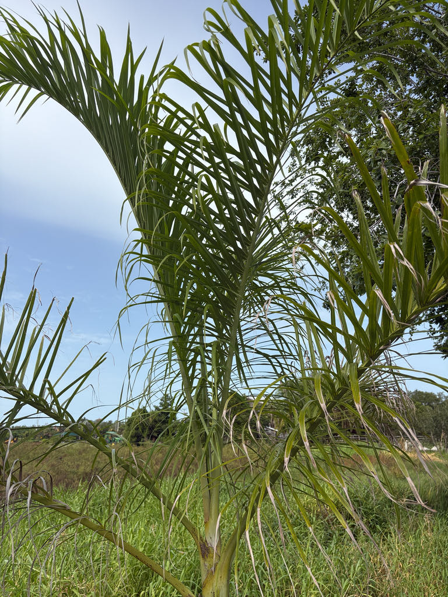

- The bamboo comparison in this palm's name is not just marketing. The trunk is closely and evenly ringed from base to crown, and the youngest sections are a vivid lime green that gradually weathers to gray — the overall effect really does read as bamboo, just at palm scale.
- This species carries one of the more unusual leaf arrangements in the palm family: the fronds emerge in three vertical ranks around the trunk rather than the usual spiral. Look up through the canopy and the geometry is surprisingly precise — the same triangular stacking you see in the Triangle Palm (Dypsis decaryi) elsewhere in the park.
- The palm is monoecious — every individual produces both male and female flowers on the same inflorescence, so a single tree can set fruit without a neighbor. The small fleshy fruits are readily taken and dispersed by birds.
- In northern Madagascar, the heart of this palm — the tender growing tip — is harvested as a food, a practice that, combined with forest loss, has put pressure on wild populations. Outside its native range, where nobody is eating the crown, it thrives.
- In the wild forests of Madagascar, this palm has a built-in dispersal partnership: its fleshy black fruits are eaten by lemurs, who pass the hard seeds intact and carry them well away from the parent tree. Lose the lemurs, and the palm's natural regeneration takes a serious hit.
Dypsis madagascariensis is native to the northern and western parts of Madagascar, where it grows in moist rainforest and dry semi-deciduous forest, occasionally right down to the beach, from sea level to roughly 1970 feet elevation. It is notably more tolerant of dry conditions than most other members of the genus.
The species was first described under the genus Chrysalidocarpus, and for much of the twentieth century the clustering and solitary forms were treated as separate species — the solitary form traded widely under the name Dypsis lucubensis (or Chrysalidocarpus lucubensis).
A 1995 monograph on the palms of Madagascar by John Dransfield and Henk Beentje of the Royal Botanic Gardens, Kew, consolidated them into a single species under the current name.
It is now cultivated as an ornamental across the tropics and is well established in Florida landscapes, valued for its bamboo-textured trunk, plumose fronds, and tolerance of a range of soil and light conditions.
- The species epithet madagascariensis simply means 'of Madagascar' — exactly what you'd expect — and the origin of the genus name Dypsis remains obscure, possibly rooted in the Greek for 'diver' or 'I dive,' though no one has made a fully convincing case for why that would apply to a palm.
- The leaf arrangement is a useful field character: fronds emerge in a loose three-ranked (tristichous) spiral around the trunk, similar to the Triangle Palm.
- The leaflets themselves are inserted at slightly different angles on the midrib, which scatters the leaf surface in multiple planes and gives the whole frond a soft, feathery — plumose — quality rather than the flat, two-dimensional look of many feather palms.
- In cultivation there is a well-known horticultural variety called 'Diego,' named for the area of Madagascar where it was collected. It is typically smaller than the standard form, carries a distinctly whitish color on the stems and crownshaft, and holds its leaflets erect rather than letting the tips droop — the clearest visual way to tell it apart.
- The trunk wood is notably hard, owing to a dense outer layer of tough structural fibers surrounding a softer core — a palm version of ironwood. In Madagascar the stems of larger Dypsis species are used in house construction, and the edible palm heart has also been harvested, both uses putting additional pressure on wild populations where forest loss is already severe.
- For most of the twentieth century, botanists treated the solitary-trunk form and the clustering form as entirely separate species — the solitary plant traveled the world as Chrysalidocarpus lucubensis or Dypsis lucubensis.
- The landmark 1995 Dransfield and Beentje monograph on the palms of Madagascar examined the full range of material and concluded they are one variable species, with clustering versus solitary growth simply representing natural variation within the same gene pool. The old name still turns up in nursery catalogs and older references, but it is now a synonym.
The inflorescences — arching, branched sprays up to roughly five feet long that emerge between the leaf bases — carry both male and female flowers on the same plant. This monoecious arrangement means every individual can set fruit without a separate pollen source, and the flowers attract pollinating insects when in bloom.
The small, fleshy fruits, roughly half an inch long and dark at maturity, are well suited to animal dispersal. In Madagascar, lemurs eat the fruits and disperse the seeds; in Florida cultivation, frugivorous birds are the primary dispersers and can carry seeds considerable distances.
Because this palm has no co-evolutionary history with Florida's native fauna, it does not serve as a larval host for local butterflies or moths; visitors looking for the park's best butterfly habitat will find it among the native plantings.
Arching, branched inflorescences up to roughly five feet long emerge between the leaf bases. Each inflorescence carries both male and female flowers — the palm is monoecious — so a single tree can set fruit. Flowers are small and not especially showy.
Small, fleshy, roughly half an inch long, and black at maturity. The fruits are not a food source in cultivation contexts, but they are readily taken by birds. Not toxic.
Pinnately compound, reaching roughly 8 to 12 feet long on a short petiole. The leaflets are attached at slightly varying angles on the midrib, giving the frond a full, feathery (plumose) appearance rather than a flat plane. Fronds emerge in a three-ranked (tristichous) arrangement around the trunk — look up from below and the pattern forms a loose triangle.
Solitary or clustering in groups of two to four stems. The trunk is closely and evenly ringed with leaf-base scars — lime green on the youngest sections near the crown, weathering to gray lower down. At maturity the trunk can reach 50 to 60 feet in optimal conditions, with a diameter of roughly 6 to 12 inches. The crownshaft is green with a whitish-waxy surface.
Start with the trunk: look for the close, even rings running from the base all the way to the crown, and notice how the color shifts from gray near the base to lime green just below the fronds — that two-tone quality is one of this palm's best field marks.
Then scan the canopy and try to pick out the three-ranked frond arrangement; you may need to stand back a few paces, but the fronds emerge in a loose triangle rather than a simple spiral. Finally, look for the feathery, plumose quality of the individual fronds — the leaflets fan out in multiple planes rather than lying flat, which gives the crown a soft, full texture.
If the palm is fruiting, the small black fruits hang in clusters from the branched inflorescences between the leaf bases.
The palm heart — the tender growing tip — is edible and is harvested as a food in Madagascar, but accessing it requires felling the trunk and kills the plant. The fruits are not used as food in any meaningful way and are not toxic. No toxicity to people, dogs, or cats is documented.
The name 'Madagascar Bamboo Palm' creates potential confusion in the nursery trade. The common name 'Madagascar Palm' is frequently applied to Pachypodium lamerei — a spiny, cactus-like succulent with no relation to true palms — so visitors may see that name on unrelated plants elsewhere.
The solitary-trunk form was long sold and cultivated under the separate name Dypsis lucubensis (or Chrysalidocarpus lucubensis); that name is now a synonym but still appears in older references and nursery stock.

- © Randall Carter (CC-BY-NC), via iNaturalist